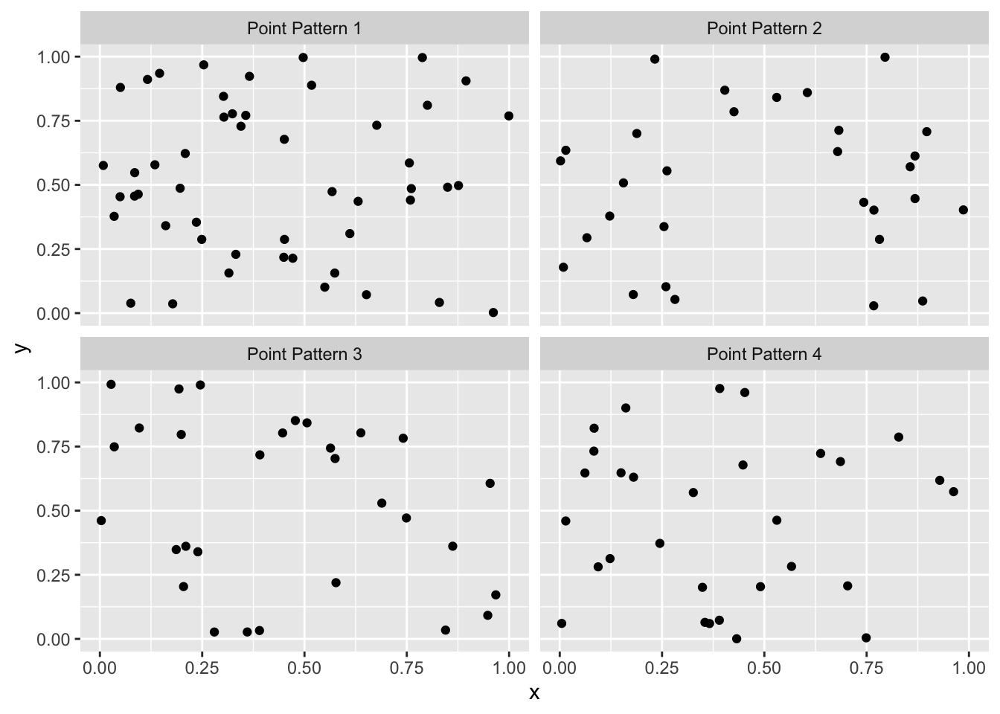

Tuesday September 27, 2022
“The most important single aspect of software development is to be clear about what you are trying to build.” – Bjarne Stroustrup
Today
- Constraining group membership based on spatial autocorrelation
- Estimating spatial autocorrelation in model residuals
- Choosing a spatial regression model
Constraining group membership based on spatial autocorrelation
As a spatial data analyst you likely will face the situation in which there are many variables and you need to group them in a way that minimizes inter-group variation but maximizes between-group variation. If you know the number of groups a priori then a common grouping (or clustering) method is called K-means.
If your data is spatial you will want the additional constraint that the resulting groups be geographically linked. In fact there are many situations that require separating geographies into discrete but contiguous regions (regionalization) such as designing communities, planning areas, amenity zones, logistical units, or even for the purpose of setting up experiments with real world geographic constraints.
There are many situations where the optimal grouping using traditional cluster metrics is sub-optimal in practice because of these geographic constraints.
Unconstrained grouping on data with spatial characteristics may result in contiguous regions because of autocorrelation, but if you want to ensure that all groups are spatially-contiguous you need a method specifically designed for the task. The ‘skater’ algorithm available in the {spdep} package is well-implemented and well-documented.
The ‘skater’ algorithm (spatial ’k’luster analysis by tree edge removal) builds a connectivity graph to represent spatial relationships between neighboring areas, where each area is represented by a node and edges represent connections between areas. Edge costs are calculated by evaluating the dissimilarity in attribute space between neighboring areas. The connectivity graph is reduced by pruning edges with higher dissimilarity.
Consider again the crime data at the tract level in the city of Columbus, Ohio. The tract polygons are projected with arbitrary spatial coordinates.
( CC.sf <- sf::st_read(dsn = here::here("data", "columbus"),
layer = "columbus") )## Reading layer `columbus' from data source
## `/Users/jameselsner/Desktop/ClassNotes/ASS-2022/data/columbus'
## using driver `ESRI Shapefile'
## Simple feature collection with 49 features and 20 fields
## Geometry type: POLYGON
## Dimension: XY
## Bounding box: xmin: 5.874907 ymin: 10.78863 xmax: 11.28742 ymax: 14.74245
## CRS: NA## Simple feature collection with 49 features and 20 fields
## Geometry type: POLYGON
## Dimension: XY
## Bounding box: xmin: 5.874907 ymin: 10.78863 xmax: 11.28742 ymax: 14.74245
## CRS: NA
## First 10 features:
## AREA PERIMETER COLUMBUS_ COLUMBUS_I POLYID NEIG HOVAL INC CRIME
## 1 0.309441 2.440629 2 5 1 5 80.467 19.531 15.725980
## 2 0.259329 2.236939 3 1 2 1 44.567 21.232 18.801754
## 3 0.192468 2.187547 4 6 3 6 26.350 15.956 30.626781
## 4 0.083841 1.427635 5 2 4 2 33.200 4.477 32.387760
## 5 0.488888 2.997133 6 7 5 7 23.225 11.252 50.731510
## 6 0.283079 2.335634 7 8 6 8 28.750 16.029 26.066658
## 7 0.257084 2.554577 8 4 7 4 75.000 8.438 0.178269
## 8 0.204954 2.139524 9 3 8 3 37.125 11.337 38.425858
## 9 0.500755 3.169707 10 18 9 18 52.600 17.586 30.515917
## 10 0.246689 2.087235 11 10 10 10 96.400 13.598 34.000835
## OPEN PLUMB DISCBD X Y NSA NSB EW CP THOUS NEIGNO
## 1 2.850747 0.217155 5.03 38.80 44.07 1 1 1 0 1000 1005
## 2 5.296720 0.320581 4.27 35.62 42.38 1 1 0 0 1000 1001
## 3 4.534649 0.374404 3.89 39.82 41.18 1 1 1 0 1000 1006
## 4 0.394427 1.186944 3.70 36.50 40.52 1 1 0 0 1000 1002
## 5 0.405664 0.624596 2.83 40.01 38.00 1 1 1 0 1000 1007
## 6 0.563075 0.254130 3.78 43.75 39.28 1 1 1 0 1000 1008
## 7 0.000000 2.402402 2.74 33.36 38.41 1 1 0 0 1000 1004
## 8 3.483478 2.739726 2.89 36.71 38.71 1 1 0 0 1000 1003
## 9 0.527488 0.890736 3.17 43.44 35.92 1 1 1 0 1000 1018
## 10 1.548348 0.557724 4.33 47.61 36.42 1 1 1 0 1000 1010
## geometry
## 1 POLYGON ((8.624129 14.23698...
## 2 POLYGON ((8.25279 14.23694,...
## 3 POLYGON ((8.653305 14.00809...
## 4 POLYGON ((8.459499 13.82035...
## 5 POLYGON ((8.685274 13.63952...
## 6 POLYGON ((9.401384 13.5504,...
## 7 POLYGON ((8.037741 13.60752...
## 8 POLYGON ((8.247527 13.58651...
## 9 POLYGON ((9.333297 13.27242...
## 10 POLYGON ((10.08251 13.03377...First, create choropleth maps of housing value, income, and crime.
tmap::tm_shape(CC.sf) +
tmap::tm_fill(col = c("HOVAL", "INC", "CRIME"))## Warning: Currect projection of shape CC.sf unknown. Long-lat (WGS84) is assumed.
The maps show distinct regional patterns. Housing values and income are clustered toward the southeast and crime is clustered in the center. But although housing values are also high in the north you don’t necessarily want to group that tract with those in the southeast because they are geographically distinct.
To group these patterns under the constraint of spatial contiguity you first scale the attribute values and center them using the scale() function. Scaling and centering variables should be done with any clustering approaches.
( CCs.df <- CC.sf |>
dplyr::mutate(HOVAL = scale(HOVAL),
INC = scale(INC),
CRIME = scale(CRIME)) |>
dplyr::select(HOVAL, INC, CRIME) |>
sf::st_drop_geometry() )## HOVAL INC CRIME
## 1 2.27610855 0.90403637 -1.15961852
## 2 0.33200225 1.20228067 -0.97579369
## 3 -0.65450986 0.27721488 -0.26906635
## 4 -0.28355918 -1.73545197 -0.16382075
## 5 -0.82373916 -0.54755948 0.93250061
## 6 -0.52454175 0.29001413 -0.54160387
## 7 1.98005188 -1.04095129 -2.08883352
## 8 -0.07100723 -0.53265603 0.19704853
## 9 0.76701615 0.56301041 -0.27569218
## 10 3.13893423 -0.13622431 -0.06741470
## 11 -1.01462975 -1.21120127 1.62242856
## 12 -1.00379913 -0.75866244 1.28954855
## 13 0.17674452 -0.84615445 0.69251980
## 14 0.24172862 -0.77356589 1.31109176
## 15 -1.10669054 -0.78934601 0.80424271
## 16 -1.06336790 -1.18349839 1.17796908
## 17 0.17945213 -0.80249612 0.10398880
## 18 1.16775124 -0.20863754 0.52794726
## 19 -0.42435801 -0.48338699 1.15903863
## 20 2.31943098 2.92722331 -2.08611253
## 21 -0.99973763 -0.65223429 0.29555480
## 22 -0.43248096 -0.46743153 -0.08509252
## 23 0.50345189 1.18878008 -0.90128119
## 24 0.79950834 -0.02436078 0.18939933
## 25 -1.11210588 -1.03691859 1.56408123
## 26 -0.98213783 -1.10284443 0.34908475
## 27 -0.23482130 -0.62295340 1.05579183
## 28 -0.84404667 -1.14299607 1.30234528
## 29 -0.32146659 -0.99834496 1.53128622
## 30 -0.86300035 -0.08222123 2.01787200
## 31 -0.35937401 0.44974438 -1.04300226
## 32 0.10092968 0.80076407 -0.95524408
## 33 -0.80343164 -0.78145595 0.40875576
## 34 -0.54078771 0.10047751 -0.66667072
## 35 -0.61931016 -0.27368671 0.24182446
## 36 -0.11568382 0.76517130 -1.24451072
## 37 0.26338981 0.46324498 0.43725866
## 38 -0.85216962 -0.57298301 1.11056729
## 39 0.06302227 0.71923344 -0.95791733
## 40 1.27335038 2.71033430 -1.12882028
## 41 0.19840570 1.37323217 -0.96961443
## 42 0.31933030 2.01600877 -1.11384361
## 43 -0.68970950 -0.17444727 0.09172721
## 44 -0.26731322 0.45342623 -0.54784308
## 45 -0.57961574 -0.04206959 -0.36458895
## 46 2.03962048 0.69240723 -1.11153410
## 47 0.22006716 0.80216710 -0.43664372
## 48 -0.63014089 -0.44919672 -0.50702314
## 49 -0.14276051 0.77516538 -0.75228685Next create adjacency neighbors using queen contiguity.
nbs <- spdep::poly2nb(CC.sf,
queen = TRUE)
plot(CC.sf$geometry)
plot(nbs,
sf::st_centroid(sf::st_geometry(CC.sf)),
add = TRUE)
Next combine the contiguity graph with your scaled attribute data to calculate edge costs based on the distance between each node. The function spdep::nbcosts() provides distance methods for Euclidean, Manhattan, Canberra, binary, Minkowski, and Mahalanobis, and defaults to Euclidean if not specified.
costs <- spdep::nbcosts(nbs,
data = CCs.df)Next transform the edge costs into spatial weights using the spdep::nb2listw() function before constructing the minimum spanning tree with the weights list.
wts <- spdep::nb2listw(nbs,
glist = costs,
style = "B")
mst <- spdep::mstree(wts)
head(mst)## [,1] [,2] [,3]
## [1,] 21 34 1.3050242
## [2,] 34 31 0.5445399
## [3,] 31 36 0.4466371
## [4,] 36 39 0.3408547
## [5,] 36 42 1.3307538
## [6,] 21 30 1.8193374Edges with higher dissimilarity are removed leaving a set of nodes and edges that take the minimum sum of dissimilarities across all edges of the tree (a minimum spanning tree).
The edge connecting node (tract) 33 with node (tract) 35 has a dissimilarity of .56 units. The edge connecting tract 35 with tract 43 has a dissimilarity of .19 units.
Finally, the spdep::skater() function partitions the graph by identifying which edges to remove based on dissimilarity while maximizing the between-group variation. The ncuts = argument specifies the number of partitions to make, resulting in ncuts + 1 groups.
clus5 <- spdep::skater(edges = mst[,1:2],
data = CCs.df,
ncuts = 4)Where are these groups located?
CC.sf <- CC.sf |>
dplyr::mutate(Group = clus5$groups)
library(ggplot2)
ggplot() +
geom_sf(data = CC.sf,
mapping = aes(fill = factor(Group)))
The map shows five distinct regions based on the three variables of income, housing value, and crime. Importantly the regions are contiguous.
As a comparison, here is the result of grouping the same three variables using hierarchical clustering using the method of minimum variance (Ward) and without regard to spatial contiguity.
dd <- dist(CCs.df)
hc <- hclust(dd,
method = "ward.D")
hcGroup <- cutree(hc, k = 5)
CC.sf <- CC.sf |>
dplyr::mutate(hcGroup = hcGroup)
ggplot() +
geom_sf(data = CC.sf,
mapping = aes(fill = factor(hcGroup)))
Here the map shows five regions but the regions are not contiguous.
More information: https://www.tandfonline.com/doi/abs/10.1080/13658810600665111
Estimating spatial autocorrelation in model residuals
A spatial regression model should be considered for your data whenever the residuals resulting from a aspatial regression exhibit spatial autocorrelation. A common way to proceed is to first regress the response variable onto the explanatory variables and check for autocorrelation in the residuals.
If there is significant spatial autocorrelation in the residuals then a spatial regression model should be considered.
Let’s stay with the Columbus crime data and fit a linear regression model with CRIME as the response variable and INC and HOVAL as the explanatory variables. At the level of tracts, how well does income and housing value statistically explain the amount of crime?
model <- lm(CRIME ~ INC + HOVAL,
data = CC.sf)
summary(model)##
## Call:
## lm(formula = CRIME ~ INC + HOVAL, data = CC.sf)
##
## Residuals:
## Min 1Q Median 3Q Max
## -34.418 -6.388 -1.580 9.052 28.649
##
## Coefficients:
## Estimate Std. Error t value Pr(>|t|)
## (Intercept) 68.6190 4.7355 14.490 < 2e-16 ***
## INC -1.5973 0.3341 -4.780 1.83e-05 ***
## HOVAL -0.2739 0.1032 -2.654 0.0109 *
## ---
## Signif. codes: 0 '***' 0.001 '**' 0.01 '*' 0.05 '.' 0.1 ' ' 1
##
## Residual standard error: 11.43 on 46 degrees of freedom
## Multiple R-squared: 0.5524, Adjusted R-squared: 0.5329
## F-statistic: 28.39 on 2 and 46 DF, p-value: 9.341e-09The model statistically explains 55% of the variation in crime as can be seen by the multiple R-squared value. Looking at the coefficients (values under the Estimate column), you see that higher incomes are associated with lower values of crime (negative coefficient) and higher housing values are associated with lower crime. For every one unit increase in income, crime values decrease by 1.6 units.
Use the residuals() method to extract the vector of residuals from the model.
( res <- residuals(model) )## 1 2 3 4 5 6
## 0.3465419 -3.6947990 -5.2873940 -19.9855151 6.4475490 -9.0734793
## 7 8 9 10 11 12
## -34.4177224 -1.9146840 4.3960594 13.5091017 10.9800573 9.5877236
## 13 14 15 16 17 18
## 4.7728320 16.1128397 0.6675424 3.5491565 -4.6630963 12.8399569
## 19 20 21 22 23 24
## 12.8428644 3.4948724 -6.0537589 -7.8697868 -1.7037730 6.9913819
## 25 26 27 28 29 30
## 11.0984343 -9.1741523 10.8026296 7.1086321 14.9005133 28.6487456
## 31 32 33 34 35 36
## -15.1722792 -8.1776706 -4.3438864 -12.9749799 -1.5798172 -14.4376850
## 37 38 39 40 41 42
## 12.8687861 9.0515532 -9.1569014 12.2449674 -2.7098171 1.3443547
## 43 44 45 46 47 48
## -3.5432909 -6.3880045 -9.4155428 -1.9731210 1.1150296 -15.7632989
## 49
## -6.2476690There are 49 residuals one for each tract. The residuals are the difference between the observed crime rates and the predicted crime rates (observed - predicted). A residual that has a value greater than 0 indicates that the model under predicts the observed crime rate in that tract and a residual that has a value less than 0 indicates that the model over predicts the observed crime rate.
If you plot the residuals, they should be approximated by a normal distribution. You check this with the sm::sm.density() function with the first argument the vector of residuals (res) and the argument model = set to “Normal”.
sm::sm.density(res,
model = "Normal")
The density curve of the residuals (black line) fits completely within the blue ribbon that defines a normal distribution.
Next create a map of the model residuals. Do the residuals show any pattern of clustering? Since the values in the vector of residuals res are arranged in the same order as the rows in the simple feature data frame you create a new column in the data frame using the $ syntax and calling the new column res.
CC.sf$res <- res
tmap::tm_shape(CC.sf) +
tmap::tm_fill(col = "res") +
tmap::tm_borders(col = "gray70") +
tmap::tm_layout(title = "Linear model residuals")## Warning: Currect projection of shape CC.sf unknown. Long-lat (WGS84) is assumed.## Variable(s) "res" contains positive and negative values, so midpoint is set to 0. Set midpoint = NA to show the full spectrum of the color palette.
The map shows contiguous tracts with negative residuals across the southwestern and southern part of the city and a group of contiguous tracts with positive residuals toward the center.
The map indicates some clustering but the clustering appears to be less than with the crime values themselves. That is, after accounting for regional factors related to crime, the autocorrelation is reduced.
To determine the amount of autocorrelation in the residuals use the spdep::lm.morantest() function, passing the regression model object and the weights object to it. Note that you once again use the default neighborhood and weighting schemes.
nbs <- spdep::poly2nb(CC.sf)
wts <- spdep::nb2listw(nbs)
spdep::lm.morantest(model,
listw = wts)##
## Global Moran I for regression residuals
##
## data:
## model: lm(formula = CRIME ~ INC + HOVAL, data = CC.sf)
## weights: wts
##
## Moran I statistic standard deviate = 2.8393, p-value = 0.00226
## alternative hypothesis: greater
## sample estimates:
## Observed Moran I Expectation Variance
## 0.222109407 -0.033418335 0.008099305Moran’s I on the model residuals is .22. This compares with the value of .5 on the value of crime alone. Part of the autocorrelation in the crime rates is statistically ‘absorbed’ by the explanatory factors.
But does this output let you know if you need a spatial regression model?
The \(p\)-value on I of .002, thus you reject the null hypothesis of no spatial autocorrelation in the model residuals and conclude that a spatial regression model would improve the fit. The \(z\)-value (as the basis for the \(p\)-value) takes into account the fact that these are residuals from a model so the variance is adjusted accordingly.
Given significant spatial autocorrelation in the model residuals, the next step is to choose the type of spatial regression model.
Choosing a spatial regression model
Ordinary regression models fit to spatial data can lead to improper inference because observations are not independent. Thus it’s necessary to check the residuals from an aspatial model for autocorrelation. If the residuals are strongly correlated the model is not specified properly.
You can try to improve the model by adding variables. If that’s not possible (no additional data, or no clue as to what variable to include), you can try a spatial regression model. Spatial regression models are widely used in econometrics and epidemiology.
The equation for a regression model in vector notation is \[ y = X \beta + \varepsilon \] where \(y\) is a \(n\) by 1 vector of response variable values, \(X\) is a \(n\) by \(p+1\) matrix containing the explanatory variables and augmented by a column of ones for the intercept term, \(\beta\) is a \(p+1\) \(\times\) 1 vector of model coefficients and \(\varepsilon\) is a \(n\) by 1 vector of residuals (iid).
A couple options exist if the elements of the vector \(\varepsilon\) are correlated. One is to include a spatial lag term so the model becomes \[ y = \rho W y + X \beta + \varepsilon \] where \(Wy\) is the weighted average of the neighborhood response values (spatial lag variable) with \(W\) the spatial weights matrix, and \(\rho\) is the autoregression coefficient. This is called a spatial autoregressive (SAR) model.
Note: \(Wy\) is the spatial lag variable you compute with the spdep::lag.listw() function and \(\rho\) is Moran’s I. Thus the model is also called a spatial lag model (SLM).
Justification for the spatial lag model is domain specific but motivated by a ‘diffusion’ process. The response variable \(y_i\) is influenced by the explanatory variables at location \(i\) and by explanatory variables at locations \(j\).
\(\rho Wy\) is called the spatial signal term and \(\beta X\) is called the trend term.
Another option is to include a spatial error term so the model becomes \[ y = X\beta + \lambda W \epsilon + u \] where \(\lambda\) is the autoregression coefficient, \(W\epsilon\) is the spatial error term representing the weighted average of the neighborhood residuals, and \(u\) are the overall residuals assumed to be iid. This is called a spatial error model (SEM).
Here the lag term is computed using the residuals rather the response variable.
Application of the spatial error model is motivated by the omitted variable bias. Suppose the variable \(y\) is statistically described by two variables \(x\) and \(z\) each centered on zero and independent. Then \[ y = \beta x + \theta z \]
If \(z\) is not observed, then the vector \(\theta z\) is nested in the error term \(\epsilon\). \[ y = \beta x + \epsilon \]
Examples of an unobserved latent variable \(z\) include local culture, social capital, neighborhood readiness. Importantly you would expect the latent variable to be spatially correlated (e.g., culture will be similar across neighborhoods), so let \[ z = \lambda W z + r\\ z = (I - \lambda W)^{-1} r \] where \(r\) is a vector of random independent residuals (e.g., culture is similar but not identical), \(W\) is the spatial weights matrix and \(\lambda\) is a scalar spatial correlation parameter. Substituting into the equation above \[ y = \beta x + \theta z \\ y = \beta x + \theta (I - \lambda W)^{-1} r\\ y = \beta x + (I - \lambda W)^{-1} \varepsilon \] where \(\varepsilon = \theta r\).
Another motivation for considering a spatial error model is heterogeneity. Suppose you have multiple observations for each unit. If you want a model that incorporates individual effects you can include a \(n \times 1\) vector \(a\) of individual intercepts for each unit. \[ y = a + X\beta \] where now \(X\) is a \(n\) \(\times\) \(p\) matrix.
In a cross-sectional setting with one observation per unit (typically the case in observational studies), this approach is not possible since you will have more parameters than observations.
Instead you can treat \(a\) as a vector of spatial random effects. You assume that the intercepts follows a spatially smoothed process \[ a = \lambda W a + \epsilon \\ a = (I - \lambda W)^{-1} \epsilon \] which leads to the previous model \[ y = X\beta + (I - \lambda W)^{-1} \epsilon \]
In the absence of domain-specific knowledge of the process that might be responsible for the autocorrelated residuals, you can run some statistical tests on the linear model.
The tests are performed with the spdep::lm.LMtests() function. The LM stands for ‘Lagrange multiplier’ indicating that the technique simultaneously determines the coefficients on the explanatory variables AND the coefficient on the spatial lag variable.
The test type is specified as a character string. The tests should be considered in a sequence starting with the standard versions and moving to the ‘robust’ versions if the choice remains ambiguous.
To perform LM tests you specify the model object, the weights matrix, and the two model types using the test = argument. The model types are specified as character strings "LMerr" and "LMlag" for the spatial error and lag models, respectively.
spdep::lm.LMtests(model,
listw = wts,
test = c("LMerr", "LMlag"))##
## Lagrange multiplier diagnostics for spatial dependence
##
## data:
## model: lm(formula = CRIME ~ INC + HOVAL, data = CC.sf)
## weights: wts
##
## LMerr = 5.2062, df = 1, p-value = 0.02251
##
##
## Lagrange multiplier diagnostics for spatial dependence
##
## data:
## model: lm(formula = CRIME ~ INC + HOVAL, data = CC.sf)
## weights: wts
##
## LMlag = 8.898, df = 1, p-value = 0.002855The output shows that both the spatial error and spatial lag models are significant (\(p\)-value < .15). Ideally one model is significant and the other is not, and you choose the model that is significant.
Since both are significant, you test again. This time you use the robust forms of the statistics with character strings "RLMerr" and "RLMlag" in the test = argument.
spdep::lm.LMtests(model,
listw = wts,
test = c("RLMerr", "RLMlag"))##
## Lagrange multiplier diagnostics for spatial dependence
##
## data:
## model: lm(formula = CRIME ~ INC + HOVAL, data = CC.sf)
## weights: wts
##
## RLMerr = 0.043906, df = 1, p-value = 0.834
##
##
## Lagrange multiplier diagnostics for spatial dependence
##
## data:
## model: lm(formula = CRIME ~ INC + HOVAL, data = CC.sf)
## weights: wts
##
## RLMlag = 3.7357, df = 1, p-value = 0.05326Here the error model has a large \(p\)-value and the lag model has a \(p\)-value that is less than .15 so you choose the lag model for your spatial regression.
A decision tree (from Luc Anselin) shows the sequence of tests for making a choice about which type of spatial model to use Decision Tree
{kind=link}
If both tests show significance models, then you should fit both models and check which one results in the lowest information criteria (AIC).
Another options is to include both a spatial lag term and a spatial error term into a single model.